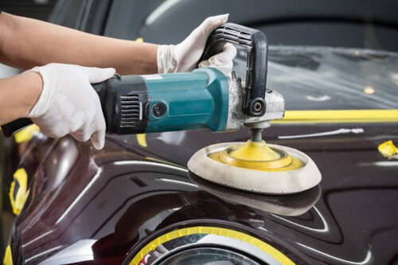
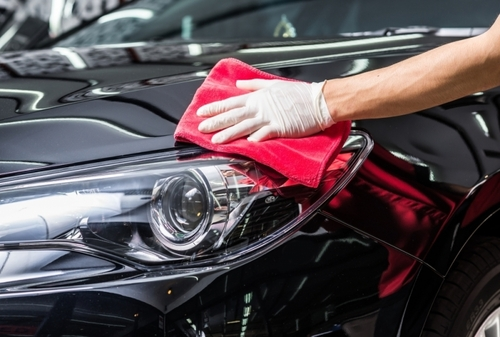
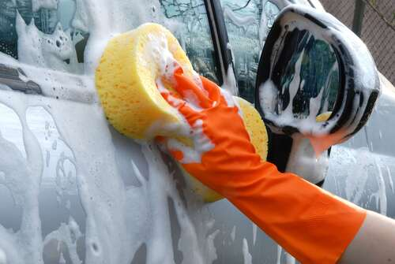
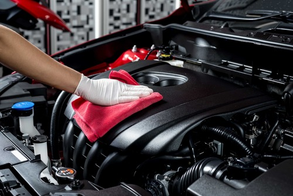
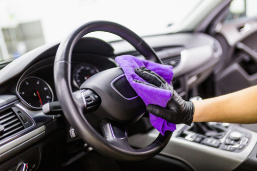
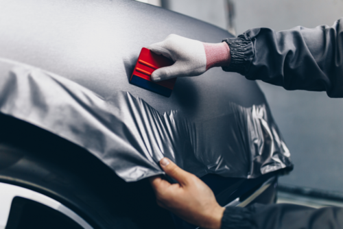

Estética é CUIDAR, PREVENIR E VALORIZAR seu veículo!
Polimento comercial/técnico
Esse serviço desempenha um papel crucial em muitas áreas, melhorando a estética, durabilidade, desempenho e segurança de uma ampla variedade de produtos e superfícies.
Polimento e proteção de faróis
São procedimentos vantajosos que melhoram a segurança, a estética e a durabilidade dos faróis do veículo, contribuindo para uma experiência de condução mais segura e agradável.
Lavagem simples/detalhada
Tanto a lavagem simples quanto a lavagem detalhada são importantes para manter a limpeza, a estética e a condição geral do veículo. A escolha entre elas dependerá das necessidades individuais do proprietário e do estado atual do carro.
Lavagem de motor
Pontos positivos da Lavagem de motor: Manutenção Preventiva, Melhoria da Eficiência, Identificação de Vazamentos e Problemas, Resistência à Corrosão, Manutenção da Estética, Facilita a Manutenção Futura, Redução de Odores Desagradáveis, Prevenção de Superaquecimento, Valor de Revenda, Economia de Tempo e Dinheiro.
Higienização interna
Aqui estão alguns pontos positivos da higienização interna: Melhoria na Qualidade do Ar, Saúde e Bem-Estar, Eliminação de odores desagradáveis, Preservação dos Materiais, Conforto e Estética, Prevenção de Doenças Transmitidas por Contato, etc.
Envelopamento
É um processo que envolve a aplicação de um adesivo especial sobre a pintura existente para alterar sua cor ou adicionar designs personalizados.